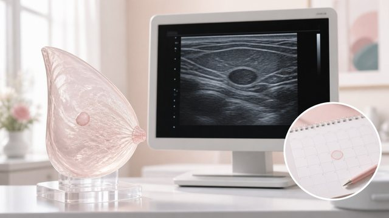

健康护理
每月花 2 分钟自检，异常及时就医，别自己吓自己。

本专栏文章

乳房自检怎么做｜每个月花几分钟，学会读懂自己的身体
选对时间、用对手法，自检并不难也不神秘。它帮你在平时就熟悉自己的乳房、更早注意到变化——但它只是辅助，不能代替专业检查。
阅读全文

常见乳腺问题与就医｜哪些不用怕，哪些别拖延
胀痛、结节、肿块、溢液……好多「异常」其实并不可怕，但也有些信号需要认真对待。分清哪些可以先观察、哪些该去看乳腺科，才不会自己吓自己，也不会耽误。
阅读全文

乳腺检查指南｜B 超和钼靶是什么，多久查一次
体检时看到乳腺 B 超、钼靶有点懵？这篇说清它们分别是什么、各适合什么情况，以及一般多久查一次。自己平时的留意和专业检查并不冲突，两者都重要。
阅读全文

乳房日常护理｜穿对、养好、动起来，剩下的交给健康
内衣怎么选、皮肤怎么养、运动该怎么穿、作息和情绪怎么管——这些生活里的小事，才是对乳房最实在的日常照顾。不用过度焦虑，把一件件小事做好就够了。
阅读全文

乳腺结节是什么｜查出来先别慌，分清情况再说
体检单上出现「乳腺结节」，很多人一下子就慌了。其实结节很常见，绝大多数是良性的。这一篇帮你把「良性、需随访、要警惕」理清楚，让你心里有底，也不耽误该做的检查。
阅读全文
乳头不适与溢液｜哪些是正常的，哪些该去查
乳头内陷、皲裂、溢液……这些问题比你想的更普遍，但原因也五花八门。这一篇帮你分清「大多是正常的」和「值得去看的」两大类，让你知道什么时候可以放心、什么时候该去找医生。
阅读全文
孕期哺乳期乳房护理｜把这段时间的乳房照顾好
怀孕后乳房会怎么变？哺乳期怎么预防乳腺炎、怎么正确喂奶？这一篇讲透孕期和哺乳期的乳房变化与护理，让你在特殊时期更安心，也知道什么时候该及时就医。
阅读全文
运动与乳房健康｜动起来是好事，支撑要选对
运动对身体好，但也有的人一跑步就乳房子痛、晃动得不舒服。这一篇讲运动时为什么会不适、怎么选对运动内衣、以及运动对乳房的真正意义——动起来是好事，支撑要选对。
阅读全文
想要更进一步了解？
任何关于胸部美学、健康或手术的疑问，建议你到正规医疗机构，由执业医师面诊评估。健康与安全，永远优先。
回到顶部